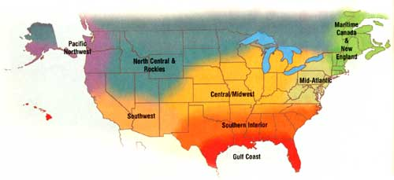

New England/Canada Maritimes
The days of strawberries and the sweet smell of newly mown hay are six months behind us - and six months ahead. Summer’s plenty is stored in the freezer and helps us through the darker days of winter. Pull some strawberries from the freezer and make a strawberry mousse. Delicious hot soups are easy to make from just about anything on hand. Winter flies by if you get out and move around in it - shovel, ski, skate or walk, then come in for hot soup or tea, and pull out the new seed catalogs.
I’m looking forward to planting a few new varieties in my garden, including ‘Piracicaba,’ a multi-headed broccoli, and ‘Limon,’ a lemon-yellow habanero-type pepper. This summer, I also plan to conduct a Thai basil trial, looking for plant mass and bolt resistance.
- Roberta Bailey, Fedco Seeds, Waterville, Maine.
Mid-Atlantic
Now is the time to reach under the fabric row cover and pull up a carrot so sweet it makes you dizzy. If your cold frame is full of tasty greens as well, you are the fortunate benefactor of your good timing, hard work and wise variety selection. To make sure you get the varieties you need, place orders early before seed stock starts running low.
Mid-January is the time to start bulb onions and artichokes from seed indoors. Sow the onions thickly in a flat and the artichokes in 5-inch pots. Move them to a greenhouse or heated cold frame two weeks after they sprout. Allow interior temperatures to dip to 40 degrees, but no lower - a light bulb can help regulate temperature in a tight cold frame. Artichokes must endure these cool temperatures soon if they are going to succeed in this region.
- Cricket Rakita, Southern Exposure Seed Exchange, Mineral, Va.
Central/Midwest
Current gardening trends include a return to native plants, which of course, have been updated. For example, echinacea (purple coneflower) can now be found with larger flowers and reliable first-year blooms in ‘Primadonna Deep Rose.’ The new ‘Arizona Sun’ gaillardia won the 2005 All-America Selections award for its first-year blooms, which illustrates another trend in perennial growing - we aren’t as patient as we used to be. Many new selections grow quickly and easily from seed, including ‘Origami’ aquilegia, ‘Camelot’ digitalis and ‘Miss Tilly’ platycodon.
- Connie Dam-Byl, William Dam Seeds Ltd., Dundas, Ontario.
Southern Interior
Winter can be a tough time for gardeners. Planning for next season’s garden brings some satisfaction, but it lacks the thrill of watching those first leaves poke through the soil. So when the weather won’t allow you to garden outdoors, try growing sprouts indoors. You can cure your gardener’s blues, and have delicious and nutritious additions to your winter salads and sandwiches.
Besides the seeds, the only thing you need to get started is a container in which to sprout them. Both are available from seed catalogs and the Internet. Broccoli sprouts are an excellent first choice. They are crisp, delicious and packed with 50 times the sulfuraphane - a cancer-fighting antioxidant - of mature broccoli. In just three to five days, you can harvest a whole “crop.” Mung bean sprouts are great for Chinese cuisine, and curled cress and watercress make tangy additions to salads, too.
- Lori Hardee and Karen Park Jennings, Park Seed Co., Greenwood, S.C.
Gulf Coast
Still shopping for holiday gifts? A good stainless steel spading fork might be appreciated. Plants are nice, too, and seed packets make great stocking stuffers. Regional gardening books are wonderful gifts that will receive frequent use, as well. Check the catalogs for new varieties - try spicy ‘Red Rubin’ basil, dwarf-and-tinged-with-burgundy ‘Little Lucy’ okra and taste-trial winner ‘Marcellino’ cherry tomato. If you are looking for a big, delicious tomato, then ‘Fabulous’ deserves a trial. Dark-green ‘Festina’ and golden ‘Soleil’ bush beans, the “new kids on the block,” are both delicious and nutritious. Meanwhile, keep those cool-season crops like lettuce and broccoli protected from winter frosts. In mid-January, start tomato seeds for transplants to set out in early March, and set out short-day onion plants like ‘1015,’ ‘Grano,’ ‘Burgundy’ or ‘Texas Supersweet.’
- Bill Adams, Burton, Texas.
North Central & Rockies
Increasingly, we are discovering the inherent beauty and amazing utility of our native grasses. Taller grasses can be used as borders along walkways, as dividers and backgrounds, or as ac cents in flower gardens. Wild, sod-forming grasses are increasingly valuable as low-maintenance, drought-tolerant substitutes for the traditional lawn. Laying a base with the proper grass is the easiest and least expensive method we have found to control weeds. If wildflowers are part of your plan, research their germination and planting needs now. Many species need to be cold-treated before they will germinate. This is easy to do in your refrigerator, but you need to order these seeds early to allow for time.
- Bill McDorman, Seeds Trust, High Altitude Gardens, Hailey, Idaho.
Pacific Northwest
Just as the winter doldrums start to set in, a breath of fresh air arrives at your doorstep with the onslaught of spring seed catalogs. This is the perfect time to accomplish two tasks: 1) Peruse the catalogs for holiday gifts for your gardening friends. 2) Start planning your spring garden.
Look through seed catalogs and choose varieties that will fit your spacing needs, time restrictions and culinary preferences. Every year, plant one vegetable that you have never before grown or eaten. You may end up falling in love with it.
- Rose Marie Nichols McGee, Nichols Garden Nursery, Albany, Ore., and Josh Kirschenbaum, Territorial Seed Co., Cottage Grove, Ore.
Southwest
If you planted fall crops, fill in gaps now with seeds of chard, spinach or other hardy greens. With a little protection and a lucky warm spell, the seedlings will germinate. Transplant artichokes, broccoli, cabbage and perennials such as asparagus and strawberries. Deciduous fruit trees need to be pruned in the next month or two, and soon it will be time to start transplants for warm-season crops.
In brushy areas, take time to assess the flammability of your surroundings. Information about fire-wise landscaping is available from Extension offices, state forestry departments and the Internet.
- Erica Renaud, Seeds of Change, Santa Fe, N.M.
|
 |
|
|